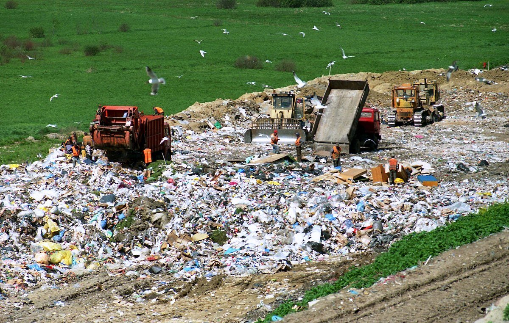

Creating a Sustainable Personal Project

Addressing global challenges
One of the key reasons why students should consider a sustainable Personal Project is that it allows them to address global challenges, and connect with the global community. This also ties in with the Global Context of Globalization and Sustainability, which students can further discuss in Strand i of Criterion A. Sustainable development is one of the most pressing issues we face today, as we strive to find ways to protect our planet while still meeting our economic and social needs. By choosing a project that focuses on sustainability, students can contribute to solving these challenges in their own small way, whilst also completing the project.
Developing ATL skills
Working on a sustainable Personal Project can help students develop ATL skills that that will be valuable throughout their live, such as research, critical thinking, creativity, and problem-solving. These are all essential skills that are needed to tackle complex issues like sustainability. By working on a project that requires these skills, students can develop them in a meaningful way and apply them to other areas of their lives. These skills can also be discussed further and backed up by evidence in Criterion B of the Personal Project.
Positive impact on the society
Students should choose a sustainable Personal Project is the opportunity to make a positive impact on the environment, and the local community. Not only are students completing the project, they are also assisting their community through the process, allowing them to feel accomplished, satisfied, and confident in their Project, as they know they have worked hard and made an impactful difference.
Responsibility
Students who are working on a sustainable Personal Project build selflessness and learn to make decisions that are not only good for themselves but also for the planet and future generations. This makes them better citizens, more mindful, and conscious of their actions, which is a lifelong skill that they would've built.
In conclusion, there are several reasons why students should consider a sustainable MYP Personal Project. By choosing a sustainable Personal Project, they are allowing themselves to be global citizens, fostering interconnectedness and caring.